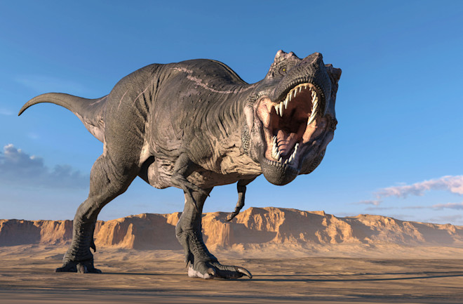

💞 Grush's Cajun Dino Grill is a fun new collaboration with Chef Matt Grush, and Artist (Amanda) Panda Cloyd, in Asheville NC 💞
Mission, Vision, and Values
Our Mission is to bring people together using our passion and knowledge for Cajun cuisine and the flavors and spices of the local community. Food is life, it's a bond that all people, from all walks of life have in common. Cooking and eating is an experience to create, share, and learn from one another. Our business is our plate, and our plate is the platform in which we share ideas, connect with tradition, and build a community of people who love food.
Our Vision is to evoke a sense of familiarity, comfort, and home, through each dish served.
Our Core Values are communication, honesty, integrity, responsibility, and creativity.
Who We Are
Originally from New Orleans, Chef Grush is bringing to Asheville a much needed, authentic, yet fresh look of classic and new age Cajun Cuisine. Using as much local produce, breads, meats, and cheeses from Asheville, and its surrounding area farmers, Grush hopes to bring a sense of support and community into each dish served.
Recently upgraded from a small pop-up, Grush's Cajun Dino Grill is now a fully operational Food Truck located in Asheville at Music Venues, Local Breweries, Bars, Farmers Markets, Distillery's, and more!
Our giant green truck can be spotted at your favorite place from far away, and is fully equipped and dedicated to serving you the best Cajun food you've ever had, in a fun, whimsical, even magical environment. Always with a smile.
The Dino Grill is a LNT- Leave No Trace production. The menus vary depending on the season, event taking place, the requests of the guests, or locally available products. As well, we offer a variety of “Grush's Gourmet To-Go's” consisting of prepackaged goods such as rotating homemade aiolis, remoulades, hot sauces, spices, pickles, and more!
Stay tuned for the most updated Menu, and more news of upcoming events!!
Below are a bunch of pictures of us, our truck, and best of all some dishes we either currently have on our Menu, or have served in the past. The Menu is changing constantly, although we always try to offer a base seasonal Menu, and then do daily or weekly Specials. Depending on what is in season we always try to bring you the freshest, best food possible. We love interacting with our customers, and making new friends! So if you have any questions or are interested in learning more about us, or anything exciting you see here, please feel free to reach out to us!
ERMAGERD PICTURES
Hover over the T-Rex picture!
MUST GO FASTER! MUST GO FASTER!